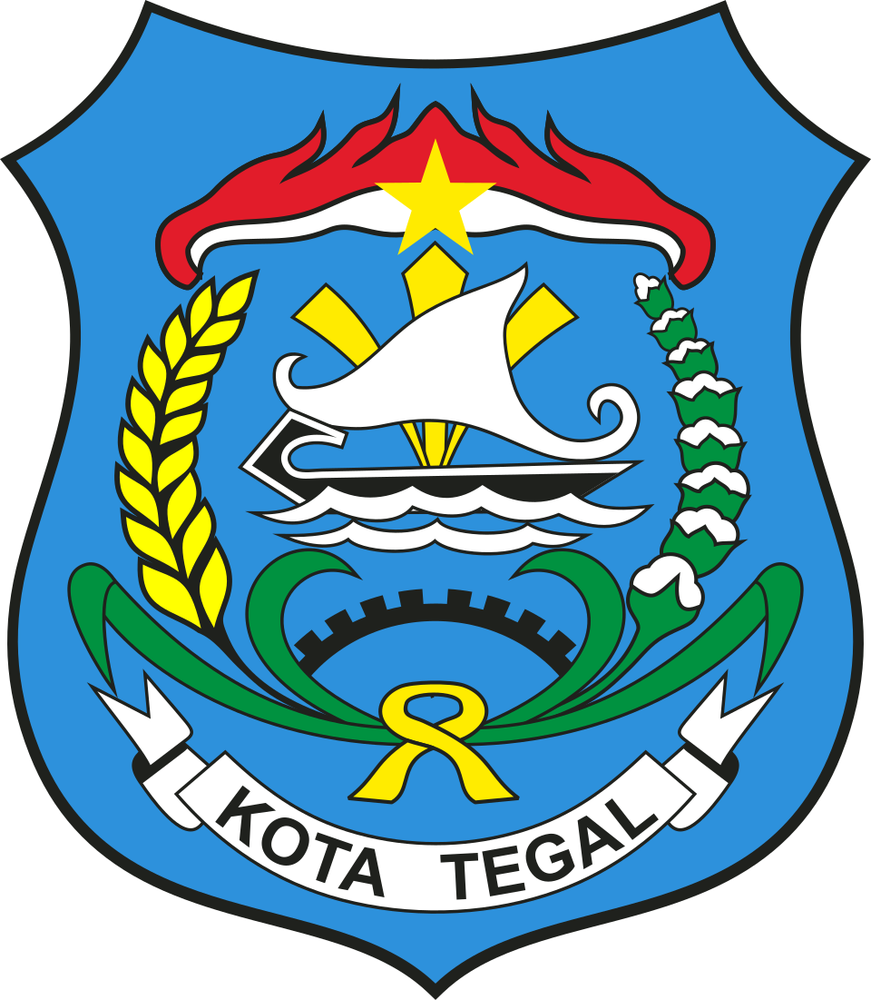

|
 |
SISTEM INFORMASI STATISTIKKOTA TEGAL |
Data tahun 2025
Tentang Kota Tegal 🌊
Kota Tegal berada di pesisir utara Jawa Tengah, di jalur pantura yang menghubungkan Jakarta dan Surabaya. Kota kecil ini terkenal dengan warteg, teh poci, dan suasana pelabuhannya yang ramai. Luas wilayahnya sekitar 39,7 km2 dan terbagi menjadi empat kecamatan.
Pada tahun 2025, tercatat 297.173 penduduk. Jumlah laki-laki sedikit lebih banyak daripada perempuan, dan kelompok umur terbanyak ada di usia 40–44 tahun. Setelah usia 55 tahun, jumlah perempuan mulai melampaui laki-laki.
Tabel Penduduk ⭐
Anak (0–14) Remaja (15–24) Dewasa (25–59) Lansia (60+)
| Kelompok Umur | Jumlah Penduduk (Ribu) | ||
|---|---|---|---|
| Laki-Laki | Perempuan | Total | |
| 0-4 | 9.818,0 | 9.122,0 | 18.940,0 |
| 5-9 | 12.449,0 | 11.496,0 | 23.945,0 |
| 10-14 | 12.323,0 | 11.634,0 | 23.957,0 |
| 15-19 | 12.208,0 | 11.525,0 | 23.733,0 |
| 20-24 | 11.458,0 | 11.045,0 | 22.503,0 |
| 25-29 | 11.889,0 | 11.344,0 | 23.233,0 |
| 30-34 | 11.925,0 | 11.066,0 | 22.991,0 |
| 35-39 | 11.205,0 | 10.507,0 | 21.712,0 |
| 40-44 | 12.643,0 | 12.044,0 | 24.687,0 |
| 45-49 | 12.300,0 | 11.552,0 | 23.852,0 |
| 50-54 | 9.603,0 | 9.533,0 | 19.136,0 |
| 55-59 | 7.380,0 | 7.839,0 | 15.219,0 |
| 60-64 | 5.490,0 | 6.456,0 | 11.946,0 |
| 65-69 | 4.315,0 | 5.228,0 | 9.543,0 |
| 70-74 | 2.768,0 | 3.309,0 | 6.077,0 |
| 75+ | 2.183,0 | 3.516,0 | 5.699,0 |
| Jumlah | 149.957,0 | 147.216,0 | 297.173,0 |
Sumber: BPS Kota Tegal
Peta Wilayah 📍
Istilah Singkat 💡
- Kelompok umur
- Pengelompokan penduduk per lima tahun, misalnya 0–4 atau 5–9.
- Usia produktif
- Penduduk umur 15–64 tahun, yaitu usia yang umumnya sudah bisa bekerja.
- Rasio jenis kelamin
- Jumlah laki-laki per 100 perempuan. Di Tegal angkanya sekitar 101,9.
Dibuat oleh: Renata Indah Atira – 25/564807/GE/10866